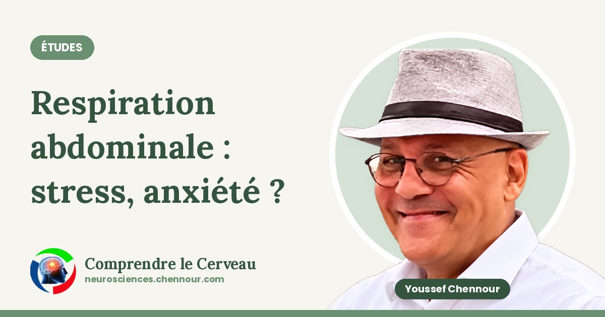

Respiration abdominale : que disent les études sur stress et anxiété ?
Respiration abdominale, stress, anxiété, dépression : ce que montrent trois études, leurs limites et un exercice simple, sans promesse ni avis médical.
Un mécanisme, une technique, une étude à la fois. Chaque article s'appuie sur une source précise — auteurs, méthodologie, résultats — jamais une affirmation isolée.

Respiration abdominale, stress, anxiété, dépression : ce que montrent trois études, leurs limites et un exercice simple, sans promesse ni avis médical.